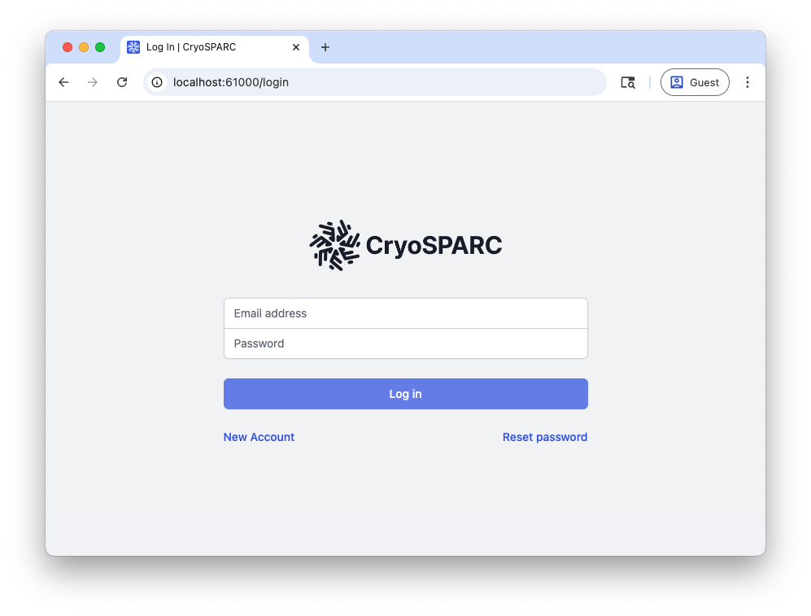
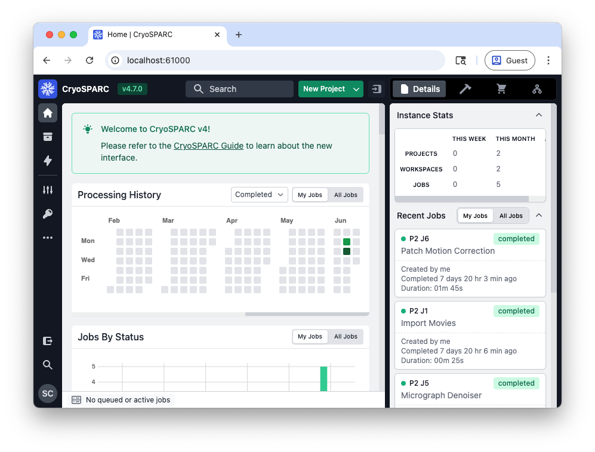

Installing CryoSPARC on Engaging¶
CryoSPARC is a software platform for rapid, automated processing and analysis of cryo-electron microscopy (cryo-EM) data to determine high-resolution 3D structures of biological macromolecules.
This guide offers a way to install this software in the user space, and has been adapted from these instructions.
Getting Started¶
First, connect to the Engaging cluster:
You will need to obtain a CryoSPARC license ID here. Licenses are free for academic use. Once you have received your license ID, save it as an environment variable for future uses:
Next, choose a working directory to use for your installation:
Download and extract the master and worker software:
cd $CRYOSPARC_WORKDIR
curl -L https://get.cryosparc.com/download/master-latest/$CRYOSPARC_LICENSE_ID -o cryosparc_master.tar.gz
curl -L https://get.cryosparc.com/download/worker-latest/$CRYOSPARC_LICENSE_ID -o cryosparc_worker.tar.gz
tar -xf cryosparc_master.tar.gz cryosparc_master
tar -xf cryosparc_worker.tar.gz cryosparc_worker
Installation¶
The CryoSPARC software setup requires two different installations:
cryosparc_master and cryosparc_worker. The "master" software is used for
running the user interface and scheduling jobs on the worker nodes, while the
"worker" software is used for running computations.
You will need to run the installation on a compute node. To do this, request an interactive job:
Master Node Setup¶
Run this script to install the master node software:
#!/bin/bash
module load miniforge
cd $CRYOSPARC_WORKDIR/cryosparc_master
DB_PATH=$CRYOSPARC_WORKDIR/cryosparc_database
PORT=$(python -c 'import socket; s=socket.socket(); s.bind(("", 0)); print(s.getsockname()[1]); s.close()')
./install.sh --license $CRYOSPARC_LICENSE_ID \
--hostname $(hostname) \
--dbpath $DB_PATH \
--port $PORT
Once this installation is complete, you can start running CryoSPARC:
# Add cryosparc_master to your path:
export PATH=$CRYOSPARC_WORKDIR/cryosparc_master/bin:$PATH
# Ensure that CryoSPARC recognizes the master node you are using:
echo 'export CRYOSPARC_FORCE_HOSTNAME=true' >> "$CRYOSPARC_WORKDIR/cryosparc_master/config.sh"
# Start cryosparc:
cryosparcm start
To log in to the user interface, you need to register yourself as a user:
cryosparcm createuser --email "${USER}@mit.edu" \
--password <your_password> \
--username $USER \
--firstname <your_first_name> \
--lastname <your_last_name>
Connect the Master Node to the Cluster¶
The master node can be set up to submit jobs to other nodes on Engaging using the Slurm scheduler. This is the preferred setup for Engaging so that GPU resources are not allocated to your job when they are not in use.
We will now set up three different "lanes" for CryoSPARC jobs, each using a different partition on Engaging. You can choose to set up one, two, or all three of these lanes.
Note that you will need to hard-code the path to the cryosparc_worker
directory in cluster_info.json (using the $CRYOSPARC_WORKDIR environment
variable will not work).
Create a directory ${CRYOSPARC_WORKDIR}/cryosparc_master/cluster_mit_normal_gpu and create the following two files within it:
{
"name": "mit_normal_gpu",
"worker_bin_path": "/path/to/cryosparc_worker/bin/cryosparcw",
"cache_path": "~/orcd/scratch",
"send_cmd_tpl": "{{ command }}",
"qsub_cmd_tpl": "/usr/bin/sbatch {{ script_path_abs }}",
"qstat_cmd_tpl": "/usr/bin/squeue -j {{ cluster_job_id }}",
"qdel_cmd_tpl": "/usr/bin/scancel {{ cluster_job_id }}",
"qinfo_cmd_tpl": "/usr/bin/sinfo"
}
#!/usr/bin/env bash
#SBATCH --job-name=cryosparc_{{ project_uid }}_{{ job_uid }}
#SBATCH --cpus-per-task={{ num_cpu }}
#SBATCH --gres=gpu:{{ num_gpu }}
#SBATCH --mem={{ ram_gb|int }}G
#SBATCH --comment="created by {{ cryosparc_username }}"
#SBATCH --output={{ job_dir_abs }}/{{ project_uid }}_{{ job_uid }}_slurm.out
#SBATCH --error={{ job_dir_abs }}/{{ project_uid }}_{{ job_uid }}_slurm.err
#SBATCH -p mit_normal_gpu
{{ run_cmd }}
Now, from the same directory where you created these two files, run:
Note
In this example, we have specified the mit_normal_gpu partition for
running jobs. This partition is available to the entire MIT community.
As of September 2025, the time limit for jobs on this partition is 6 hours.
While this is suitable for many CryoSPARC jobs, some jobs require longer
runtimes. To run these longer jobs, you
will need to obtain a rental reservation on the mit_normal_gpu. Once you
have a reservation, add your reservation ID to
cluster_script.sh and run cryosparcm cluster connect again.
Create a directory ${CRYOSPARC_WORKDIR}/cryosparc_master/cluster_mit_preemptable and create the following two files within it:
{
"name": "mit_preemptable",
"worker_bin_path": "/path/to/cryosparc_worker/bin/cryosparcw",
"cache_path": "~/orcd/scratch",
"send_cmd_tpl": "{{ command }}",
"qsub_cmd_tpl": "/usr/bin/sbatch {{ script_path_abs }}",
"qstat_cmd_tpl": "/usr/bin/squeue -j {{ cluster_job_id }}",
"qdel_cmd_tpl": "/usr/bin/scancel {{ cluster_job_id }}",
"qinfo_cmd_tpl": "/usr/bin/sinfo"
}
#!/usr/bin/env bash
#SBATCH --job-name=cryosparc_{{ project_uid }}_{{ job_uid }}
#SBATCH --cpus-per-task={{ num_cpu }}
#SBATCH --gres=gpu:{{ num_gpu }}
#SBATCH --mem={{ ram_gb|int }}G
#SBATCH --comment="created by {{ cryosparc_username }}"
#SBATCH --output={{ job_dir_abs }}/{{ project_uid }}_{{ job_uid }}_slurm.out
#SBATCH --error={{ job_dir_abs }}/{{ project_uid }}_{{ job_uid }}_slurm.err
#SBATCH -p mit_preemptable
{{ run_cmd }}
Now, from the same directory where you created these two files, run:
Create a directory ${CRYOSPARC_WORKDIR}/cryosparc_master/cluster_mit_normal and create the following two files within it:
{
"name": "mit_normal",
"worker_bin_path": "/path/to/cryosparc_worker/bin/cryosparcw",
"cache_path": "~/orcd/scratch",
"send_cmd_tpl": "{{ command }}",
"qsub_cmd_tpl": "/usr/bin/sbatch {{ script_path_abs }}",
"qstat_cmd_tpl": "/usr/bin/squeue -j {{ cluster_job_id }}",
"qdel_cmd_tpl": "/usr/bin/scancel {{ cluster_job_id }}",
"qinfo_cmd_tpl": "/usr/bin/sinfo"
}
#!/usr/bin/env bash
#SBATCH --job-name=cryosparc_{{ project_uid }}_{{ job_uid }}
#SBATCH --cpus-per-task={{ num_cpu }}
#SBATCH --gres=gpu:{{ num_gpu }}
#SBATCH --mem={{ ram_gb|int }}G
#SBATCH --comment="created by {{ cryosparc_username }}"
#SBATCH --output={{ job_dir_abs }}/{{ project_uid }}_{{ job_uid }}_slurm.out
#SBATCH --error={{ job_dir_abs }}/{{ project_uid }}_{{ job_uid }}_slurm.err
#SBATCH -p mit_normal
{{ run_cmd }}
Now, from the same directory where you created these two files, run:
Worker Node Setup¶
Before you can start running jobs, however, you will need to install
cryosparc_worker. This can be done in the same compute node session that we
used to install cryosparc_master.
Run the following script to install the worker node software:
#!/bin/bash
cd $CRYOSPARC_WORKDIR/cryosparc_worker
./install.sh --license $CRYOSPARC_LICENSE_ID
All setup is now complete. You can run cryosparcm stop and exit your compute
node session.
Running CryoSPARC¶
To run CryoSPARC, we recommend starting up the master node in a batch session. Our friends at the Yale Center for Research Computing have developed a script for running the software on a shared cluster similar to Engaging, which we have adapted here:
#!/bin/bash
#SBATCH -N 1
#SBATCH -n 4
#SBATCH --mem-per-cpu=4G
#SBATCH -p mit_normal
#SBATCH -t 12:00:00
#SBATCH -J cryosparc_master
#SBATCH -o output/cryosparc_master-%N-%j.out
#SBATCH --signal=B:10@60 # send the signal '10' at 60s before job finishes
export PATH=$CRYOSPARC_WORKDIR/cryosparc_master/bin:$PATH
function cleanup()
{
date
echo -n "Shutting down CryoSPARC @ "; date
cryosparcm start
cryosparcm cli "remove_scheduler_target_node('$worker_host')"
cryosparcm stop
echo "Done"
}
# Shut down CryoSPARC cleanly when timeout is imminent
trap cleanup 10
# Shut down CryoSPARC cleanly when scancel is invoked
trap cleanup 15
export MASTER_HOST=$(hostname)
# Allow master node software to run on different nodes:
sed -i.bak 's/export CRYOSPARC_MASTER_HOSTNAME.*$/export CRYOSPARC_MASTER_HOSTNAME=\"'"$MASTER_HOST"'\"/g' $CRYOSPARC_WORKDIR/cryosparc_master/config.sh
grep -qxF "export CRYOSPARC_FORCE_HOSTNAME=true" "$CRYOSPARC_WORKDIR/cryosparc_master/config.sh" || echo 'export CRYOSPARC_FORCE_HOSTNAME=true' >> "$CRYOSPARC_WORKDIR/cryosparc_master/config.sh"
source $CRYOSPARC_WORKDIR/cryosparc_master/config.sh
cryosparcm start
# Print instructions for pulling up the UI:
cat 1>&2 <<END
~~FOLLOW THE BELOW INSTRUCTIONS~~
To open the CryoSPARC user interface, port forward to the compute node in a new shell window on your local computer:
ssh -L ${CRYOSPARC_BASE_PORT}:$(hostname):${CRYOSPARC_BASE_PORT} ${USER}@orcd-login001.mit.edu
Now, point your web browser to http://localhost:${CRYOSPARC_BASE_PORT}
When you're finished, run:
scancel $SLURM_JOB_ID
END
sleep infinity &
wait
Note
If you have a rental reservation on mit_normal so that you can have longer runtimes for the master node software, add the following flags to run_cryosparc.sbatch:
You can run this script with the command sbatch run_cryosparc.sbatch.
This will create an output file (within an output directory) that will have
printed instructions for accessing the user interface. This involves SSH
tunneling, which will make the compute node visible to your local computer. The
output file will contain a line that looks something like this:
Here we have specified port 61000 for both the local and remote sides of the tunnel. The remote port (to the right of the node name) must be the same as what we specified in the master node installation script. The local port (to the left of the node name) can be any number greater than 1024 that is not already in use on your machine. For simplicity, we have kept the port numbers the same.
Tip
Use tail -f on your output file to see the output as it's being printed.
Now, using your web browser, navigate to http://localhost:61000. At the login prompt, enter the username and password you specified when you added yourself as a user:

Then, you should see the following user interface:

When you're finished using CryoSPARC, run scancel <job id> to terminate your
master session. The Job ID was printed when you submitted your job and you can
also find it in your output file.
Note
Try not to cancel your job before CryoSPARC has successfully started (e.g., during the "configuring database" phase), as this can cause issues starting it the next time.
FAQs¶
What are my resource limits for submitting jobs?
On Engaging, you are limited to using a certain number of CPU cores, RAM, and GPUs at a time. Unfortunately, this information is not visible from the CryoSPARC user interface. If you hit your resource limit, any new job submitted will simply pend until the other jobs have finished.
To see what your resource limits are for a given partition on Engaging
(mit_normal_gpu in this case), you can use this command: